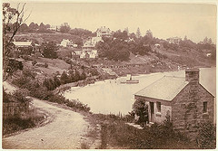

Natural Leadership
Jul 9, 2014
Sustainability Bucket List

Eco-careers
Feb 26, 2014
Visual Communication for Sustainability
Innocation & Entreprenership
Nov 13, 2013
Designers Emerge as Entrepreneurss
Biominicry
Feb 20, 2014
Design Rules for Sustainability
Green Graphic % Packaging Design
Feb 10, 2014
Background Stories
Innocation & Entreprenership
Jan 30, 2014
Green Redesigns by Virtual Teams at MCAD
About the MA Program
Jan 15, 2014
Educating Global Change Agents
Downloaded November 18, 2014
.Main-Nav